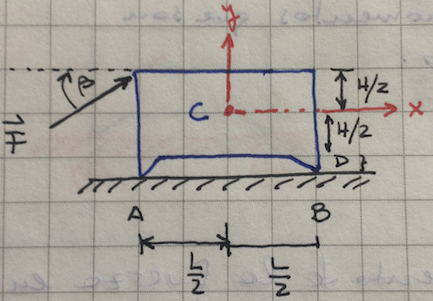
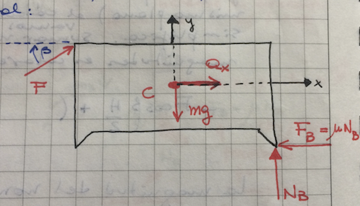

4. Dinámica de sistema de cuerpo rígido#
Cuerpo Rígido:Se caracteriza porque tiene una masa que se distribuye de manera continua a lo largo del cuerpo.Densidad de Masa:Se define \(\rho(x,y,z)\) como una función de densidad de masa que representa una masa por unidad de volumen.Elemento Diferencial de Masa:En el caso de un cuerpo rígido, vamos a reemplazar \(m_{i}\) por: \({dm}\,(x,y,z)\).Traslación:Por analogía con un sistema de partículas:
Nota
Para un cuerpo rígido, la fuerza resultante \({\bf{F}}(t)\) será igual a:
Con \({\bf{a}}(x,y,z,t)\) el vector de aceleración en un punto sobre el cuerpo rígido y \({dm}\,(x,y,z)=\rho(x,y,z)\,dV\), siendo \(V\) un elemento diferencial de volumen.
Nota
En traslación pura, se cumple que para todos los puntos del sistema de cuerpo rígido, la aceleración es la misma, es decir, \({\bf{a}}(x,y,z,t)={\bf{a}}(t)\). Por lo que la ecuación de movimiento del sistema quedará:
Además, la masa total del sistema de cuerpo rígido es:
Así, la ecuación diferencial de movimiento queda expresada como:
Nota
Como ejercicio, obtener las ecuaciones de movimiento para el siguiente sistema de cuerpo rígido en traslación horizontal.

Las reacciones horizontales en los puntos de contacto \(A\) y \(B\), como se muestra en el dibujo, son proporcionales a las reacciones verticales en esos puntos, siendo la constante de proporcionalidad es el coeficiente de fricción \(\mu\).
Diagrama de cuerpo libre:

Usar los valores: \(\beta = 30^{\text{o}}\); \(\mu = 0.5\); \(\text{H}=0.6\,{\text{L}}\); y \(\text{D}=0.1\,{\text{L}}\), y determinar la magnitud de la fuerza, \(\text{F}\), como una fracción del peso, \(\text{m}{\text{g}}\), cuando el cuerpo está a punto de volcar (pero no se vuelca!), al igual que la aceleración del cuerpo como una fracción de \(\text{g}\).
Al desarrollar el ejercicio, se observa lo siguiente:
El problema es bidimensional, todo ocurre en el plano-xy.
Por lo cual, las ecuaciones de fuerza tienen solamente dos componentes escalares: \(\text{F}_{x}=\text{m}\text{a}_{x}\) y \(\text{F}_{y}=\text{m}\text{a}_{y}\)
El cuerpo en traslación horizontal solamente tiene aceleración en dirección \(\text{x}\).
En el instante de casi volcar, en el punto de contacto \(\text{A}\), la reacción normal, \(\text{N}_{\text{A}}=0\).
En el DCL, se representan las siguientes fuerzas:
La fuerza aplicada en la esquina superior izquierda \({\text{F}}\).
El peso que apunta verticalmente hacia abajo y pasa por el centro de masa.
La fuerza normal \(\text{N}_{\text{B}}\) en el punto de contacto \(\text{B}\).
La fuerza de fricción \({\text{F}_{\text{B}}}\) en el punto de contacto \(\text{B}\)